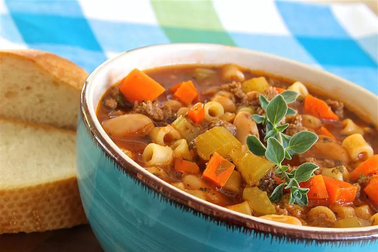

Soups

Creamy Tomato Basil Soup:
Indulge in the rich and velvety texture of creamy tomato basil soup. Made with ripe tomatoes, aromatic basil leaves, and a hint of garlic, this soup bursts with vibrant flavors. The tomatoes are simmered until they break down, creating a luscious base, which is then blended to achieve a smooth consistency. Cream or coconut milk is added for richness, while fresh basil adds a fragrant and herbaceous note. Serve it with a crusty slice of bread or grilled cheese for a satisfying meal that's both comforting and elegant.
Ingredients:
- Chicken (boneless, skinless breasts or thighs)
- Carrots
- Celery
- Onion
- Chicken broth
- Egg noodles
- Thyme
- Parsley
- Salt and pepper to taste
Steps:
- In a large pot, heat some oil over medium heat. Add diced onions, carrots, and celery. Sauté until they begin to soften, about 5 minutes.
- Add chicken broth to the pot and bring it to a simmer.
- Add diced chicken pieces and let it simmer until the chicken is cooked through, about 10-15 minutes.
- Stir in egg noodles and continue simmering until they are tender, about 8-10 minutes.
- Season with thyme, parsley, salt, and pepper to taste.
- Serve hot and enjoy!